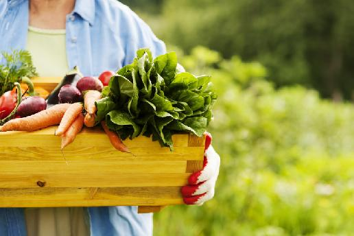

A biogazdálkodásról bővebben
A biogazdálkodás előnye a mikroelemekben, vitaminokban gazdag, kevés káros anyagot tartalmazó biotermék. Míg a szokványos gazdálkodásban a károkozók elleni védelem érdekében rovarölő- és gyomirtó szereket használnak, addig a biogazdálkodásban a megelőzésé a főszerep. Ezért például nem szabad olyan növényeket egy területre, egymás után ültetni, melyeket azonos károkozók pusztítanak. Növényvédő szerek közül csak olyanokat használnak, melyek káros szermaradékot egyáltalán nem hagynak. Hozamfokozásra hormonok, antibiotikumok nem használhatóak fel, valamint nem termesztenek génmódosított növényeket. A biogazdálkodás tehát egy olyan gazdálkodási, élelmiszer előállító rendszer mely tiltja, illetve korlátozza bizonyos növényvédő szerek, műtrágyák, talajjavító szerek, valamint a mesterséges állatgyógyászati készítmények, illetve hozamfokozók használatát. Az ökológiai termelés magas állatjóléti szabványokat alkalmaz, elősegíti a természeti környezet megóvását és a fenntarthatóságot. A gazdasági szereplő a gazdálkodás során elvárt elvek, szabályok betartását fokozott ellenőrzés mellett alkalmazza a termeléstől a feldolgozáson keresztül a kereskedelemig. Az ökológiai gazdálkodás rendszeréből származó termékek megnevezésben az „öko” előtag, valamint szinonimái, a „bio” és az „organic”, azaz organikus gazdálkodás használatosak. A köznyelvben számos hasonlónak tűnő kifejezés fordul elő pl. „vegyszermentes”, „natúr”, „hagyományos”, azonban ezek nem értelmezhetőek az ökológiai gazdálkodás szabályrendszere szerint.
834/2007/EK tanácsi rendelet (Öko EK rendelet) megfogalmazása szerint az ökológiai gazdálkodás (biogazdálkodás) a mezőgazdasági termelés sajátos formája, amely a külső források felhasználásának korlátozásával (pl. tilos a géntechnológiával módosított szervezetek felhasználása) a termelés során a helyi erőforrásokat és a természetes folyamatokat részesíti előnyben. Az Öko EK rendelet fogalom meghatározása szerint az ökológiai gazdálkodás a termelési módszereknek a rendeletben meghatározott szabályoknak megfelelően történő alkalmazása a termelés, a feldolgozás és a forgalmazás valamennyi szakaszában.